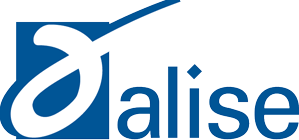
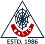
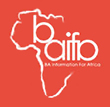

Community
Service to the field & community.
Leadership in ASIS&T, peer review, and years of volunteering, from blood drives to supporting blind students.
Leadership
Professional service
2025 – 2026
Chair-Elect
SIG-AVC, Association for Information Science and Technology (ASIS&T)
Peer review
Reviewer
Global Knowledge, Memory and Communication · Emerald Publishing
ASIS&T
Communication Officer
SIG-VIS, Association for Information Science and Technology (ASIS&T)
Affiliations
Member of
ASIS&TAssociation for Information Science and Technology

ALISEAssociation for Library and Information Science EducationACMAssociation for Computing Machinery
AASAssociation for Asian Studies

BALIDBangladesh Association of Librarians, Information Scientists and DocumentalistsLABLibrary Association of Bangladesh

BAIFABibliotheca Alexandrina Information for AfricaCommunity
Volunteering & leadership
Professional Events
- Organizing VolunteerInternational Symposium on Empowering LIS Professionals for Achieving SDGs
- RapporteurInternational Conference on the Role of LIS Professionals in the 4IR, Library Association of Bangladesh
- Event Organizing VolunteerLibrarians Times Bangladesh
- Event OrganizerDirectorate of Public Libraries and Biswashahitya Kendro
Student Leadership
- PresidentInformation 71 (Dhaka University-based students' association)
- Executive MemberUniversity Students Association of Tanore
- Tourism Affairs SecretaryRajshahi Students Association of Dhaka University
Community Service
- Education SecretaryRatoil Social Welfare Organization, Tanore, Rajshahi
- VolunteerBadhan — a blood donor organization
- Campaign VolunteerSondhani — a blood donor organization
- AmanuensisAnirban — an organization supporting blind students
- Social Work VolunteerDhaka University Alumni Association (DUAA)
Open to collaboration
Collaboration & correspondence
I welcome conversations about research collaboration, scholarly communication, AI in higher education and library digitization.